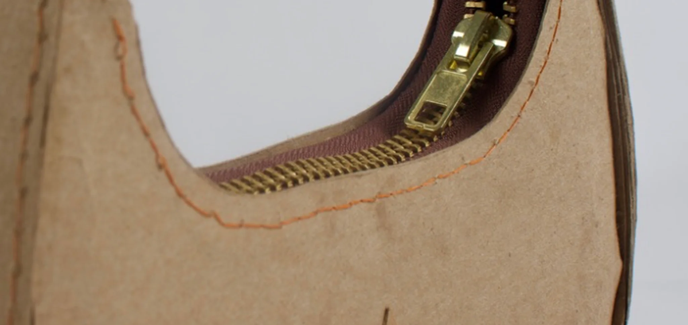
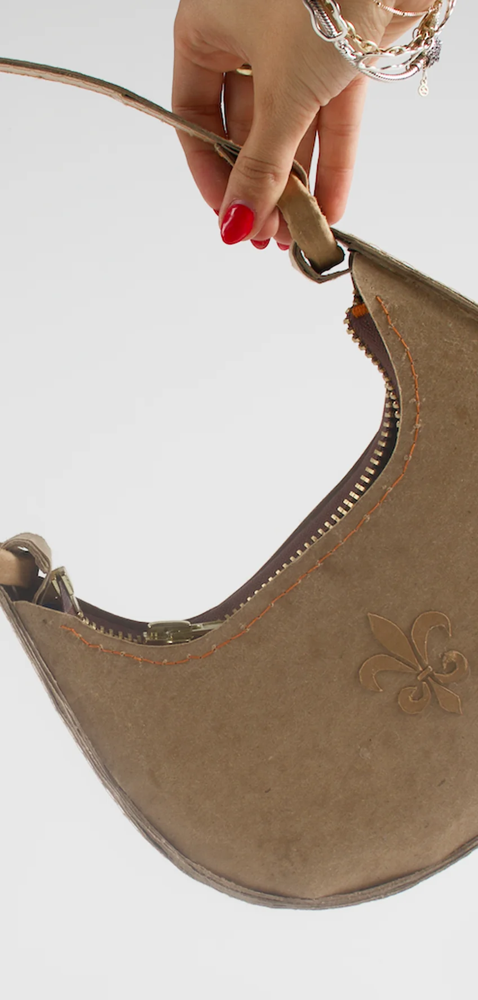
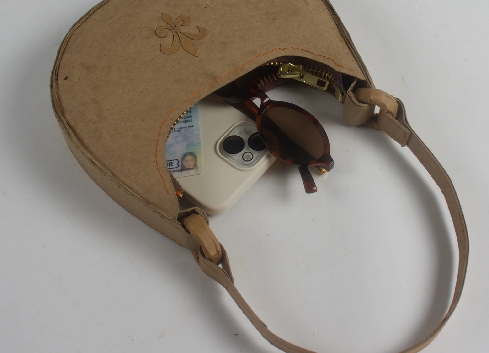
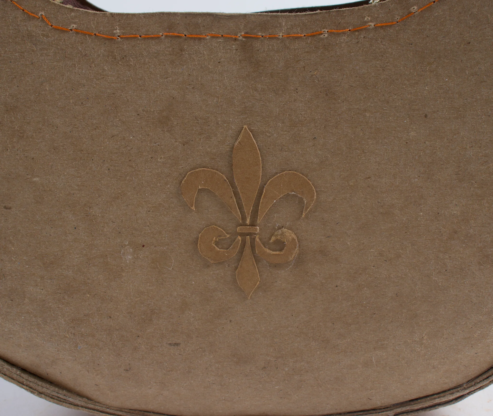
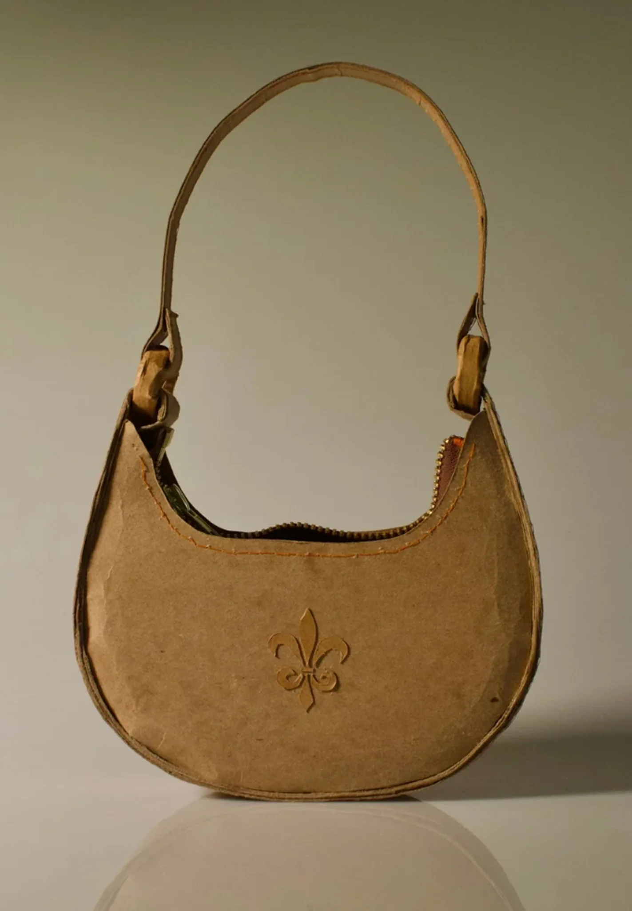

REBAGGED
2025

BEYOND THE ORIGINAL
Inspired by a purse I purchased in Rome, Italy, ReBagged recreates the original design entirely from chipboard through hand cutting, material manipulation, and white glue. A hand-stitched zipper adds functionality to the replica, blurring the line between sculpture and an everyday object.



DETAILS
MATERIALS
Chipboard
White Glue
Thread
Zipper
DIMENSIONS
8.25 in x 2 in x 14.5 in
